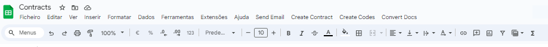
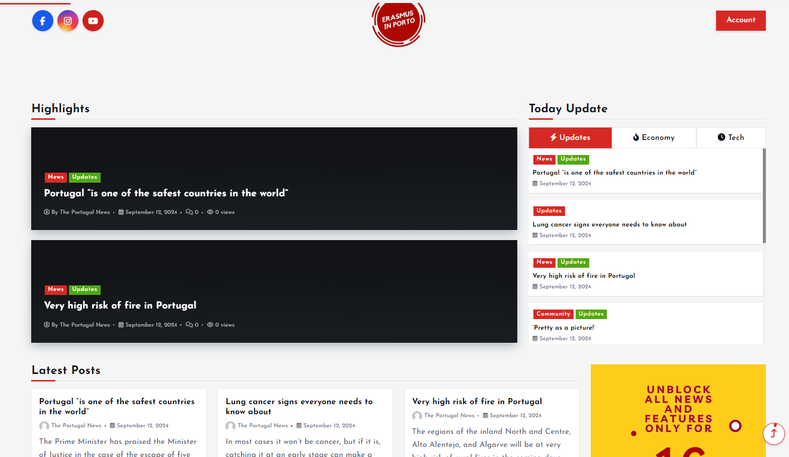

Housing Automated Online Check In Google Sheets

- Google Apps Script Proficiency: Gained practical experience in using Google Apps Script for automating tasks within Google Sheets and Google Docs.
- Menu Creation: Learned how to enhance the user interface of Google Sheets by adding custom menus for easier navigation and functionality.
- Data Handling: Developed skills in handling and manipulating data arrays, which is crucial for reading and writing data in spreadsheets.
- Document Management: Understood how to manage Google Docs and PDFs through the Drive API, including creating copies, replacing text, and saving documents.
- Email Automation: Gained insight into automating email sending with attachments, which can streamline communication processes significantly.
- Error Handling: Implemented error handling strategies to manage potential issues during PDF retrieval and email sending, improving the robustness of the script.
This Google Sheet project showcases my ability to automate and streamline tasks using scripting, demonstrating a solid understanding of both Google Sheets and Google Apps Script.
Erasmus in Porto Wordpress site - with Apple and Android App with translated News for International Students
The Erasmus in Porto WordPress website is designed to be easier to manage through multiple users with no coding experience. The use of WordPress allows for a plugin to convert it into an app. This process taught me the complexities of getting apps into stores and adhering to their requirements.
- Translated local news
- Notifications on trending topics
- Interactive comments section
- User-friendly chat system for discussions
- Tailored for international students/travelers
This helps users stay informed about the latest events and news during their stay in Porto.
Upcoming Features:
- Event Highlights: Special notifications about local events and cultural activities tailored for international students.
- Language Tips: Daily language tips to help users learn common Portuguese phrases and integrate better.
- Location-Based Recommendations: Personalized suggestions for restaurants, cafes, and activities based on the user's current location within Porto.
- Social Groups: Users can create and join groups (e.g., sports, culture, or student meetups) to socialize and organize events in Porto.
- Crisis Alerts: Emergency notifications (e.g., strikes, public transport issues) to keep users informed of any sudden changes in the city.
Erasmus in Porto Wordpress site with RSS feed translated News for International Students
The Erasmus in Porto wordpress website that pushes through multiple rss feeds with news about Portugal that are already translated into english and gives a breef resume format similar to Twitter, with features designed for international students and travelers staying in Porto.
To be created this site required the following work:
Technical Proficiency:
Enhanced skills in programming languages (e.g., JavaScript, Python) and frameworks relevant to app development.
Problem-Solving Abilities:
Improved ability to troubleshoot and resolve technical issues efficiently, fostering critical thinking.
Project Management Skills:
Experience in planning, organizing, and managing resources to meet deadlines and project goals.
User Experience (UX) Understanding:
Knowledge of creating user-friendly interfaces and ensuring a seamless experience for users.

Adaptability:
Ability to adapt to new technologies, tools, and trends in the ever-evolving field of app development.
Collaboration and Communication:
Improved teamwork and communication skills through collaboration with designers, stakeholders, and users.
Attention to Detail:
Cultivation of meticulous attention to detail in coding, design, and functionality to deliver a high-quality product.
Research and Analytical Skills:
Strengthened ability to conduct research, analyze user feedback, and implement improvements based on data-driven insights.
Creativity:
Development of creative problem-solving skills to design innovative features and functionalities that enhance the app.
Understanding of Market Needs:
Insight into user demographics and market trends, enabling the creation of relevant and valuable app features for the target audience.
This Interactive Portfolio with Resume and Projects in HTML
This project involved building an interactive portfolio website that showcases my resume and key projects. It provided a platform for potential employers to view my skills and work experience.
- Showcase Projects: Included sections for various projects, with images and descriptions.
- Resume Download: Provided a downloadable version of my resume for easy access.
- Contact Form: Allowed visitors to reach out to me directly through the website.
This portfolio demonstrates my web development skills and my ability to create an engaging user experience.